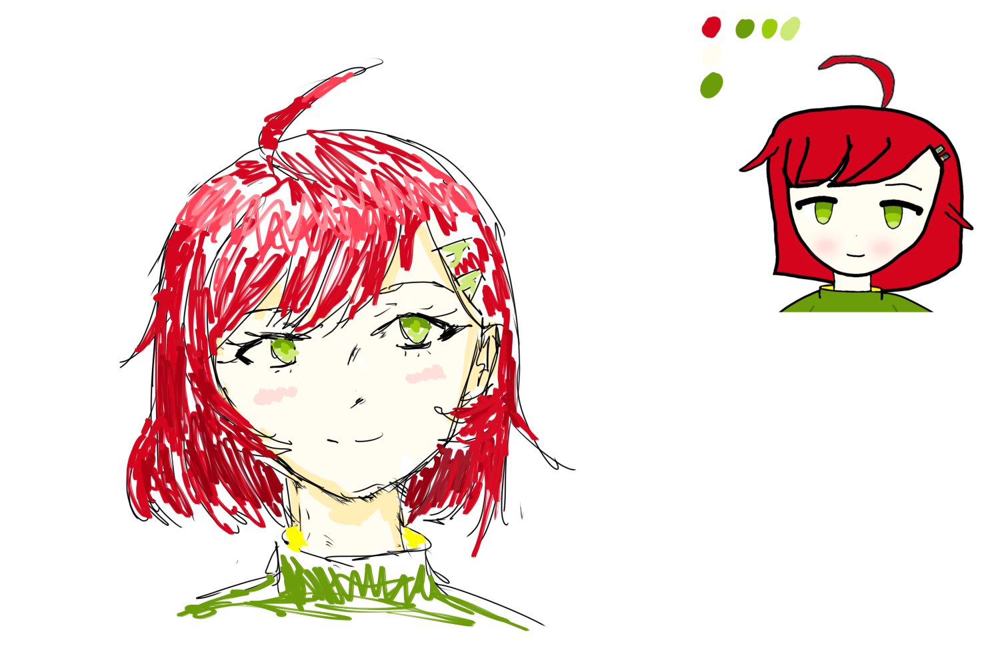
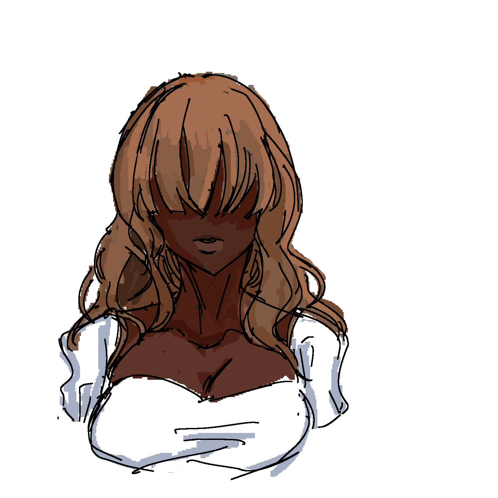
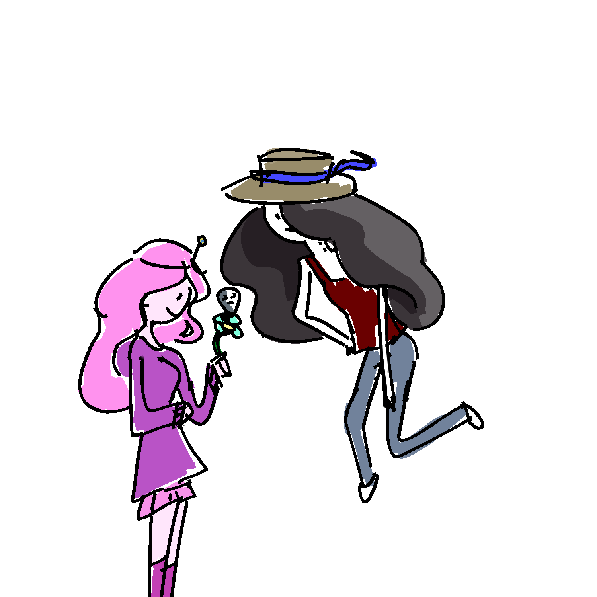

Blogs
Here is where I post my daily sketches, thoughts and such; journalizing my artistic journey.

Sketch #1. I tried recreating a drawing of an online friend's original character. It turned out nice but I do think I should've been more dynamic on the coloring instead of what he given me.
Sketch #2. this was when I tried to draw more black people with darker skin and it turned out great.


Sketch #3. After watching Fionna & Cake I tried drawing my favorite couple from the Adventure Time series: Marceline and Princess Bubblegum.